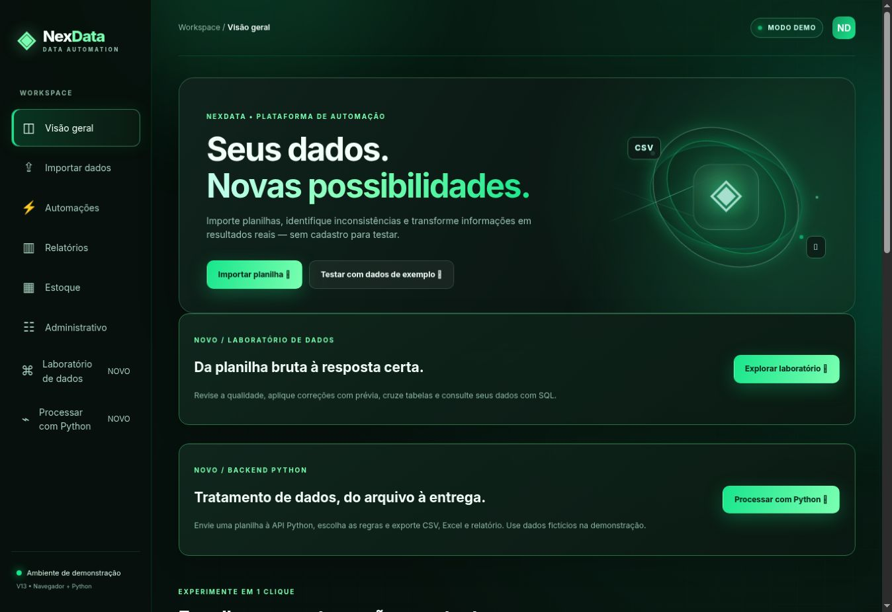
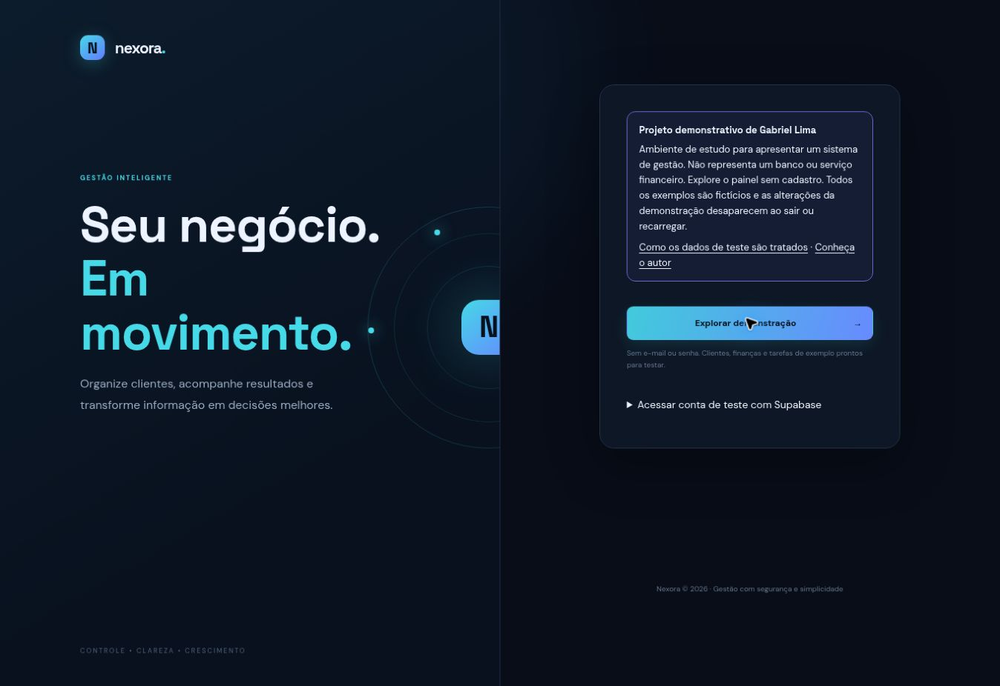

Sites & landing pages
Experiências responsivas, páginas comerciais, cardápios e apresentação digital para pequenos negócios.
Conhecer Bella Studio & Sabor da Praça ↗Conversar sobre este serviçoGABRIEL LIMA / DESENVOLVEDOR WEB
Sites, sistemas e dados.
Sua próxima ideia, bem desenvolvida.
Desenvolvo sites profissionais, aplicações web e soluções para dados para apresentar negócios, organizar rotinas e facilitar o dia a dia. Conheça meu trabalho e vamos conversar sobre o seu projeto.


Soluções para apresentar seu negócio, organizar informações e melhorar experiências digitais. Escopo e prazo definidos de acordo com cada necessidade.
Experiências responsivas, páginas comerciais, cardápios e apresentação digital para pequenos negócios.
Conhecer Bella Studio & Sabor da Praça ↗Conversar sobre este serviçoInterfaces para visualizar dados, explorar indicadores e importar/exportar arquivos CSV e Excel.
Conhecer NexData ↗Conversar sobre este serviçoFerramentas web com cadastros, painéis, tarefas e integração com banco de dados para organizar processos.
Conhecer Nexora & ShopCore ↗Conversar sobre este serviçoCorreções de interface, ajustes para celular, revisão de usabilidade e melhorias em páginas existentes.
Ver exemplos no portfólio ↗Conversar sobre este serviçoExplore as telas reais, conheça as tecnologias e veja cada projeto em funcionamento.
Nenhum projeto encontrado. Experimente outro termo.
ⓘ Projetos autorais de portfólio. As demonstrações utilizam marcas e cenários fictícios; confira as funcionalidades e condições de cada projeto nos detalhes.
Sou Gabriel Lima, estudante de Análise e Desenvolvimento de Sistemas na Estácio, construindo minha experiência com projetos práticos.
Gosto de unir organização, criatividade e código para desenvolver soluções web claras e funcionais. Meu portfólio reúne desde sites comerciais até um sistema com autenticação e banco de dados e ferramentas de visualização de planilhas.
Estou em evolução constante, estudando novas tecnologias e dando atenção ao funcionamento, à usabilidade e à qualidade de cada entrega.
DA ORGANIZAÇÃO À TECNOLOGIA
Uno minha experiência com atividades administrativas e atendimento a projetos práticos de desenvolvimento web.
Cursando Análise e Desenvolvimento de Sistemas na Estácio. Aprendizado prático com interfaces web, aplicações e integrações.
Experiência em atividades administrativas e atendimento, aplicando organização, comunicação, atenção aos detalhes e responsabilidade com prazos.
Projetos demonstrativos autorais envolvendo sites responsivos, sistemas de gestão, dashboards e e-commerce com Supabase.
Ferramentas que utilizo para construir interfaces, integrar sistemas e trabalhar com dados.
HTML5 · CSS3 · JavaScript · React · TypeScript
Aplicados a interfaces, sites e ShopCore.Python · FastAPI · Pandas · OpenPyXL
Aplicados no NexData: API REST, validação de dados e exportação CSV/Excel.Supabase · SQL · CSV · Excel
Aplicações em Nexora, NexData e ShopCore.Git · GitHub · Vercel
Versionamento, testes e publicações online.Compreender o objetivo, os usuários e o que precisa ser resolvido.
Entrega: objetivos e requisitosPlanejar a experiência, os componentes e a navegação.
Entrega: estrutura e fluxosConstruir a solução com clareza, responsividade e atenção aos detalhes.
Entrega: implementação funcionalTestar fluxos, ajustar a interface e revisar a entrega.
Entrega: revisão e validaçãoGABRIEL LIMA / WEB DEVELOPER
Estudante de ADS na Estácio, com experiência em administração e atendimento. Desenvolvo e documento projetos independentes para demonstrar competências técnicas na prática.
Um novo site, um sistema ou uma melhoria prática: me conte o que precisa e podemos definir o escopo juntos.
Uma entrega bem definida
Um prazo realista
Comunicação direta
UM NOVO PROJETO COMEÇA COM UMA CONVERSA.
Conheça meu trabalho de outra maneira: explore projetos, habilidades e contato pelo terminal interativo.